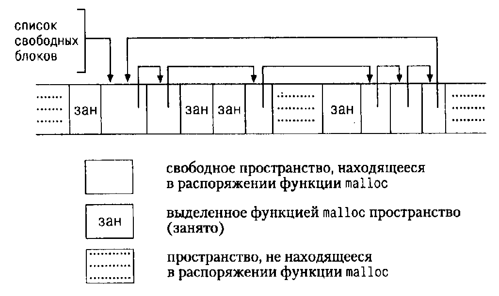

Свои услуги операционная система UNIX предлагает в виде набора системных вызовов, которые фактически являются ее внутренними функциями и к которым можно обращаться из программ пользователя. В настоящей главе описано, как в Си-программах можно применять некоторые наиболее важные вызовы. Если вы работаете в системе UNIX, то эти сведения будут вам полезны непосредственно и позволят повысить эффективность работы или получить доступ к тем возможностям, которых нет в библиотеке. Даже если вы используете Си в другой операционной системе, изучение рассмотренных здесь примеров все равно приблизит вас к пониманию программирования на Си; аналогичные программы (отличающиеся лишь деталями) вы встретите практически в любой операционной системе. Так как библиотека Си-программ, утвержденная в качестве стандарта ANSI, в основном отражает возможности системы UNIX, предлагаемые программы помогут вам лучше понять и библиотеку.
Глава состоит из трех основных частей, описывающих: ввод-вывод, файловую систему и организацию управления памятью. В первых двух частях предполагается некоторое знакомство читателя с внешними характеристиками системы UNIX. В главе 7 мы рассматривали единый для всех операционных систем интерфейс ввода-вывода. В любой конкретной системе программы стандартной библиотеки пишутся с использованием средств именно этой конкретной системы. В следующих нескольких параграфах мы опишем вызовы системы UNIX по вводу-выводу и покажем, как с их помощью можно реализовать некоторые разделы стандартной библиотеки.
В системе UNIX любые операции ввода-вывода выполняются посредством чтения и записи файлов, поскольку все внешние устройства, включая клавиатуру и экран, рассматриваются как объекты файловой системы. Это значит, что все связи между программой и внешними устройствами осуществляются в рамках единого однородного интерфейса.
В самом общем случае, прежде чем читать или писать, вы должны проинформировать систему о действиях, которые вы намереваетесь выполнять в отношении файла; эта процедура называется открытием файла. Если вы собираетесь писать в файл, то, возможно, его потребуется создать заново или очистить от хранимой информации. Система проверяет ваши права на эти действия (файл существует? вы имеете к нему доступ?) и, если все в порядке, возвращает программе небольшое неотрицательное целое, называемое дескриптором файла. Всякий раз, когда осуществляется ввод-вывод, идентификация файла выполняется по его дескриптору, а не по имени. (Дескриптор файла аналогичен файловому указателю, используемому в стандартной библиотеке, или хэндлу (handle) в MS- DOS.) Вся информация об открытом файле хранится и обрабатывается операционной системой; программа пользователя обращается к файлу только через его дескриптор.
Ввод с клавиатуры и вывод на экран применяются настолько часто, что для удобства работы с ними предусмотрены специальные соглашения. При запуске программы командный интерпретатор (shell) открывает три файла с дескрипторами 0, 1 и 2, которые называются соответственно стандартным вводом, стандартным выводом и стандартным файлом ошибок. Если программа читает из файла 0, а пишет в файлы 1 и 2 (здесь цифры - дескрипторы файлов), то она может осуществлять ввод и вывод, не заботясь об их открытии.
Пользователь программы имеет возможность перенаправить ввод-вывод в файл или из файла с помощью значков < и >, как, например, в
prog < infile > outfile
В этом случае командный интерпретатор заменит стандартные установки дескрипторов 0 и 1 на именованные файлы. Обычно дескриптор файла 2 остается подсоединенным к экрану, чтобы на него шли сообщения об ошибках. Сказанное верно и для ввода-вывода, связанного в конвейер. Во всех случаях замену файла осуществляет командный интерпретатор, а не программа. Программа, если она ссылается на файл 0 (в случае ввода) и файлы 1 и 2 (в случае вывода), не знает, ни откуда приходит ее ввод, ни куда отправляется ее вывод.
Ввод-вывод основан на системных вызовах read и write, к которым Си-программа обращается с помощью функций с именами read и write.
Для обеих первым аргументом является дескриптор файла. Во втором аргументе указывается массив символов вашей программы, куда посылаются или откуда берутся данные. Третий аргумент - это количество пересылаемых байтов.
int n_read = read(int fd, char *buf, int n); int n_written = write(int fd, char *buf, int n);
Обе функции возвращают число переданных байтов. При чтении количество прочитанных байтов может оказаться меньше числа, указанного в третьем аргументе. Нуль означает конец файла, а -1 сигнализирует о какой-то ошибке. При записи функция возвращает количество записанных байтов, и если это число не совпадает с требуемым, следует считать, что запись не произошла. За один вызов можно прочитать или записать любое число байтов. Обычно это число равно или 1, что означает посимвольную передачу "без буферизации", или чему-нибудь вроде 1024 или 4096, соответствующих размеру физического блока внешнего устройства. Эффективнее обмениваться большим числом байтов, поскольку при этом требуется меньше системных вызовов. Используя полученные сведения, мы можем написать простую программу, копирующую свой ввод на свой вывод и эквивалентную программе копирования файла, описанной в главе 1. С помощью этой программы можно копировать откуда угодно и куда угодно, поскольку всегда существует возможность перенаправить ввод-вывод на любой файл или устройство.
#include "syscalls.h"
main() /* копирование ввода на вывод */
{
char buf[BUFSIZ];
int n;
while ((n = read(0, buf, BUFSIZ)) > 0)
write(i, buf, n);
return 0;
}
Прототипы функций, обеспечивающие системные вызовы, мы собрали в файле syscalls.h, что позволяет нам включать его в программы этой главы. Однако имя данного файла не зафиксировано стандартом.
Параметр BUFSIZ также определен в <syscalls.h>: в каждой конкретной системе он имеет свое значение. Если размер файла не кратен BUFSIZ, то какая-то операция чтения вернет значение меньшее, чем BUFSIZ, а следующее обращение к read даст в качестве результата нуль.
Полезно рассмотреть, как используются read и write при написании программ более высокого уровня — таких как getchar, putchar и т. д. Вот, к примеру, версия программы getchar, которая осуществляет небуферизованный ввод, читая по одному символу из стандартного входного потока.
#include "syscalls.h"
/* getchar: небуферизованный ввод одного символа */
int getchar(void)
{
char с;
return (read(0, &c, 1) == 1) ? (unsigned char) с : EOF;
}
Переменная c должна быть типа char, поскольку read требует указателя на char. Приведение c к unsigned char перед тем, как вернуть ее в качестве результата, исключает какие-либо проблемы, связанные с распространением знака.
Вторая версия getchar осуществляет ввод большими кусками, но при каждом обращении выдает только один символ.
#include "syscalls.h"
/* getchar: простая версия с буферизацией */
int getchar(void)
{
static char buf[BUFSIZ];
static char *bufp = buf;
static int n = 0;
if (n == 0) { /* буфер пуст */
n = read(0, buf, sizeof buf);
bufp = buf;
}
return (--n >= 0) ? (unsigned char) *bufp++ : EOF;
}
Если приведенные здесь версии функции getchar компилируются с включением заголовочного файла <stdio.h> и в этом заголовочном файле getchar определена как макрос, то нужно задать строку #undef с именем getchar.
В отличие от стандартных файлов ввода, вывода и ошибок, которые открыты по умолчанию, остальные файлы нужно открывать явно. Для этого есть два системных вызова: open и creat.
Функция open почти совпадает с fopen, рассмотренной в главе 7. Разница между ними в том, что первая возвращает не файловый указатель, а дескриптор файла типа int. При любой ошибке open возвращает -1.
include <fcntl.h> int fd; int open(char *name, int flags, int perms); fd = open(name, flags, perms);
Как и в fopen, аргумент name - это строка, содержащая имя файла. Второй аргумент, flags, имеет тип int и специфицирует, каким образом должен быть открыт файл. Его основными значениями являются:
O_RDONLY - открыть только на чтение; O_WRONLY - открыть только на запись; O_RDWR - открыть и на чтение, и на запись.
В System V UNIX эти константы определены в <fcntl.h>, а в версиях Berkley (BSD) - в <sys/file.h>.
Чтобы открыть существующий файл на чтение, можно написать
fd = open(name, 0_RDONLY, 0);
Далее везде, где мы пользуемся функцией open, ее аргумент perms равен нулю.
Попытка открыть несуществующий файл является ошибкой. Создание нового файла или перезапись старого обеспечивается системным вызовом creat. Например
int creat(char *name, int perms); fd = creat(name, perms);
Функция creat возвращает дескриптор файла, если файл создан, и -1, если по каким-либо причинам файл создать не удалось. Если файл уже существует, creat "обрежет" его до нулевой длины, что равносильно выбрасыванию предыдущего содержимого данного файла; создание уже существующего файла не является ошибкой.
Если строится действительно новый файл, то creat его создаст с правами доступа, специфицированными в аргументе perms. В системе UNIX с каждым файлом ассоциированы девять битов, содержащие информацию о правах пользоваться этим файлом для чтения, записи и исполнения лицам трех категорий: собственнику файла, определенной им группе лиц и всем остальным. Таким образом, права доступа удобно специфицировать с помощью трех восьмеричных цифр. Например, 0755 специфицирует чтение, запись и право исполнения собственнику файла, а также чтение и право исполнения группе и всем остальным.
Для иллюстрации приведем упрощенную версию программы cp системы UNIX, которая копирует один файл в другой. В нашей версии копируется только один файл, не позволяется во втором аргументе указывать директорий (каталог), и права доступа не копируются, а задаются константой.
#include <stdio.h>
#include <fcntl.h>
#include "syscalls.h"
#define PERMS 0666 /* RW для собственника, группы и остальных */
void error(char *, ...);
/* cp: копирование f1 в f2 */
main(int argc, char *argv[])
{
int f1, f2, n;
char buf[BUFSIZ];
if (argc ! = 3)
error("Обращение: cp откуда куда");
if ((f1 = open(argv[1], O_RDONLY, 0)) == -1)
error("cp: не могу открыть файл %s", argv[1]);
if ((f2 = creat(argv[2], PERMS)) == -1)
error("cp: не могу создать файл %s, режим %03o",
argv[2], PERMS);
while ((n = read(f1, buf, BUFSIZ)) > 0)
if (write(f2, buf, n) != n)
error ("cp: ошибка при записи в файл %s", argv[2]);
return 0;
}
Данная программа создаст файл вывода с фиксированными правами доступа, определяемыми кодом 0666. С помощью системного вызова stat, который будет описан в параграфе 8.6, мы можем определить режим использования существующего файла и задать тот же режим для копии.
Заметим, что функция error, вызываемая с различным числом аргументов, во многом похожа на printf. Реализация error иллюстрирует, как пользоваться другими программами семейства printf. Библиотечная функция vprintf аналогична printf, с той лишь оговоркой, что переменная часть списка аргументов заменена в ней одним аргументом, который инициализируется макросом va_start. Подобным же образом соотносятся функции vfprinf с fprintf и vsprintf с sprintf.
#include <stdio.h>
#include <stdarg.h>
/* error: печатает сообщение об ошибке и умирает */
void error(char *fmt, ...)
{
va_list args;
va_start(args, fmt);
fprintf(stderr, "ошибка: ");
vfprintf(stderr, fmt, args);
fprintf(stderr, "\n");
va_end(args);
exit(1);
}
На количество одновременно открытых в программе файлов имеется ограничение (обычно их число колеблется около 20). Поэтому любая программа, которая намеревается работать с большим количеством файлов, должна быть готова повторно использовать их дескрипторы. Функция close(int fd) разрывает связь между файловым дескриптором и открытым файлом и освобождает дескриптор для его применения с другим файлом. Она аналогична библиотечной функции fclose с тем лишь различием, что никакой очистки буфера не делает. Завершение программы с помощью exit или return в главной программе закрывает все открытые файлы.
Функция unlink(char *name) удаляет имя файла из файловой системы. Она соответствует функции remove стандартной библиотеки.
Упражнение 8.1. Перепишите программу cat из главы 7, используя функции read, write, open и close. Замените ими соответствующие функции стандартной библиотеки. Поэкспериментируйте, чтобы сравнить быстродействие двух версий.
Ввод-вывод обычно бывает последовательным, т. е. каждая новая операция чтения-записи имеет дело с позицией файла, следующей за той, что была в предыдущей операции (чтения-записи). При желании, однако, файл можно читать или производить запись в него в произвольном порядке. Системный вызов lseek предоставляет способ передвигаться по файлу, не читая и не записывая данные. Так, функция
long lseek(int fd, long offset, int origin);
в файле с дескриптором fd устанавливает текущую позицию, смещая ее на величину offset относительно места, задаваемого значением origin. Значения параметра origin 0, 1 или 2 означают, что на величину offset отступают соответственно от начала, от текущей позиции или от конца файла. Например, если требуется добавить что-либо в файл (когда в командном интерпретаторе shell системы UNIX ввод перенаправлен оператором >> в файл или когда в fopen задан аргумент "a"), то прежде чем что-либо записывать, необходимо найти конец файла с помощью вызова функции
lseek(fd, 0L, 2);
Чтобы вернуться назад, в начало файла, надо выполнить
lseek(fd, 0L, 0);
Следует обратить внимание на аргумент 0L: вместо 0L можно было бы написать (long)0 или, если функция lseek должным образом объявлена, просто 0. Благодаря lseek с файлами можно работать так, как будто это большие массивы, правда, с замедленным доступом. Например, следующая функция читает любое число байтов из любого места файла. Она возвращает число прочитанных байтов или -1 в случае ошибки.
#include "syscalls.h"
/* get: читает n байт из позиции pos */
int get(int fd, long pos, char *buf, int n)
{
if (lseek(fd, pos, 0) >= 0) /* установка позиции */
return read(fd, buf, n);
else
return -1;
}
Возвращаемое функцией lseek значение имеет тип long и является новой позицией в файле или, в случае ошибки, равно -1. Функция fseek из стандартной библиотеки аналогична lseek: от последней она отличается тем, что в случае ошибки возвращает некоторое ненулевое значение, а ее первый аргумент имеет тип FILE*.
Теперь на примере функций fopen и getc из стандартной библиотеки покажем, как описанные выше части согласуются друг с другом.
Напомним, что файлы в стандартной библиотеке описываются файловыми указателями, а не дескрипторами. Указатель файла - это указатель на структуру, содержащую информацию о файле: указатель на буфер, позволяющий читать файл большими кусками: число незанятых байтов буфера; указатель на следующую позицию в буфере; дескриптор файла; флажки, описывающие режим (чтение/запись), ошибочные состояния и т. д.
Структура данных, описывающая файл, содержится в <stdio.h>, который необходимо включать (с помощью #include) в любой исходный файл, если в том осуществляется стандартный ввод-вывод. Этот же заголовочный файл включен и в исходные тексты библиотеки ввода-вывода.
В следующем фрагменте, типичном для файла <stdio.h>, имена, используемые только в библиотечных функциях, начинаются с подчеркивания. Это сделано для того, чтобы они случайно не совпали с именами, фигурирующими в программе пользователя. Такое соглашение соблюдается во всех программах стандартной библиотеки.
#define NULL 0
#define EOF (-1)
#define BUFSIZ 1024
#define OPEN_MAX 20 /* max число одновременно открытых файлов */
typedef struct _iobuf {
int cnt; /* количество оставшихся символов */
char *ptr; /* позиция следующего символа */
char *base; /* адрес буфера */
int flag; /* режим доступа */
int fd; /* дескриптор файла */
} FILE;
extern FILE _iob[OPEN_MAX];
#define stdin (&iob[0])
#define stdout (&_iob[1])
#define stderr (&_iob[2])
enum _flags {
_READ = 01, /* файл открыт на чтение */
_WRITE = 02, /* файл открыт на запись */
_UNBUF = 04, /* файл не буферизируется */
_EOF = 010, /* в данном файле встретился EOF */
_ERR = 020 /* в данном файле встретилась ошибка */
};
int _fillbuf(FILE *);
int _flushbuf(int, FILE *);
#define feof(p) (((p)->flag & _EOF) !- 0)
#define ferror(p) (((p)->flag & _ERR) != 0)
#define fileno(p) ((p)->fd)
#define getc(p) (--(p)->cnt >= 0 \
? (unsigned char) *(p)->ptr++ : _fillbuf(p))
#define putc(x,p) (--(p)->cnt >= 0 \
? *(p)->ptr++ = (x) : _flushbuf((x),p))
#define getchar() getc(stdin)
#define putchar(x) putc((x), stdout)
Макрос getc обычно уменьшает счетчик числа символов, находящихся в буфере, и возвращает символ, после чего приращивает указатель на единицу. (Напомним, что длинные #define с помощью обратной наклонной черты можно продолжить на следующих строках.) Когда значение счетчика становится отрицательным, getc вызывает _fillbuf, чтобы снова заполнить буфер, инициализировать содержимое структуры и выдать символ. Типы возвращаемых символов приводятся к unsigned; это гарантирует, что все они будут положительными.
Хотя в деталях ввод-вывод здесь не рассматривается, мы все же привели полное определение putc. Сделано это, чтобы показать, что она действует во многом так же, как и getc, вызывая функцию _flushbuf, когда буфер полон. В тексте имеются макросы, позволяющие получать доступ к флажкам ошибки и конца файла, а также к его дескриптору.
Теперь можно написать функцию fopen. Большая часть инструкций fopen относится к открытию файла, к соответствующему его позиционированию и к установке флажковых битов, предназначенных для индикации текущего состояния. Сама fopen не отводит места для буфера; это делает _fillbuf при первом чтении файла.
#include <fcntl.h>
#include "syscalls.h"
#define PERMS 0666 /* RW для собственника, группы и проч. */
/* fopen: открывает файл, возвращает файловый указатель */
FILE *fopen(char *name, char *mode)
{
int fd;
FILE *fp;
if (*mode != 'r' && *mode != 'w' && *mode != 'a'
return NULL;
for (fp = _iob; fp < _iob + OPEN_MAX; fp++)
if ((fp->flag & (_READ | _WRITE)) == 0)
break; /* найдена свободная позиция */
if (fp >= _iob + OPEN_MAX) /* нет свободной позиция */
return NULL;
if (*mode == 'w')
fd = creat(name, PERMS);
else if (*mode == 'a') {
if ((fd = open(name, O_WRONLY, 0)) == -1)
fd = creat(name, PERMS);
lseek(fd, 0L, 2);
} else
fd = open(name, O_RDONLY, 0);
if (fd ==-1) /* невозможен доступ по имени name */
return NULL;
fp->fd = fd;
fp->cnt = 0;
fp->base = NULL;
fp->flag = (*mode == 'r') ? _READ : _WRITE;
return fp;
}
Приведенная здесь версия fopen реализует не все режимы доступа, оговоренные стандартом; но, мы думаем, их реализация в полном объеме не намного увеличит длину программы. Наша fopen не распознает буквы b, сигнализирующей о бинарном вводе-выводе (поскольку в системах UNIX это не имеет смысла), и знака +, указывающего на возможность одновременно читать и писать.
Для любого файла в момент первого обращения к нему с помощью макровызова getc счетчик cnt равен нулю. Следствием этого будет вызов _fillbuf. Коли выяснится, что файл на чтение не открыт, то функция _fillbuf немедленно возвратит EOF. В противном случае она попытается запросить память для буфера (если чтение должно быть с буферизацией).
После получения области памяти для буфера _fillbuf обращается к read, чтобы его наполнить, устанавливает счетчик и указатели и возвращает первый символ из буфера. В следующих обращениях _fillbuf обнаружит, что память для буфера уже выделена.
#include "syscalls.h"
/* _fillbuf: запрос памяти и заполнение буфера */
int _fillbuf(FILE *fp)
{
int bufsize;
if ((fp->flag & ( _READ | _EOF | _ERR )) != _READ)
return EOF;
bufsize = (fp->flag & _UNBUF) ? 1 : BUFSIZ;
if (fp->base == NULL) /* буфера еще нет */
if ((fp->base = (char *) malloc(bufsize)) == NULL)
return EOF; /* нельзя получить буфер */
fp->ptr = fp->base;
fp->cnt = read(fp->fd, fp->ptr, bufsize);
if (--fp->cnt < 0) {
if (fp->cnt == -1)
fp->flag |= _EOF;
else
fp->flag |= _ERR;
fp->cnt = 0;
return EOF;
}
return (unsigned char) *fp->ptr++;
}
Единственное, что осталось невыясненным, - это каким образом организовать начало счета. Массив _iob следует определить и инициализировать так, чтобы перед тем как программа начнет работать, в нем уже была информация о файлах stdin, stdout и stderr.
FILE _iob[OPEN_MAX] = { /* stdin, stdout, stderr: */
{0, (char *) 0, (char *) 0, _READ, 0 },
{0, (char *) 0, (char *) 0, _WRITE, 1 },
{0, (char *) 0, (char *) 0, _WRITE | _UNBUF, 2 }
};
Инициализация flag как части структуры показывает, что stdin открыт на чтение, stdout - на запись, а stderr - на запись без буферизации.
Упражнение 8.2. Перепишите функции fopen и _fillbuf, работая с флажками как с полями, а не с помощью явных побитовых операций. Сравните размеры и скорости двух вариантов программ.
Упражнение 8.3. Разработайте и напишите функции _flushbuf, fflush и fclose.
Упражнение 8.4. Функция стандартной библиотеки
int fseek(FILE *fp, long offset, int origin)
идентична функции lseek с теми, однако, отличиями, что fp - это файловый указатель, а не дескриптор, и возвращает она значение int, означающее состояние файла, а не позицию в нем. Напишите свою версию fseek. Обеспечьте, чтобы работа вашей fseek по буферизации была согласована с буферизацией, используемой другими функциями библиотеки.
При разного рода взаимодействиях с файловой системой иногда требуется получить только информацию о файле, а не его содержимое. Такая потребность возникает, например, в программе печати каталога файлов, работающей аналогично команде ls системы UNIX. Она печатает имена файлов каталога и по желанию пользователя другую дополнительную информацию (размеры, права доступа и т. д.). Аналогичной командой в MS-DOS является dir.
Так как в системе UNIX каталог - это тоже файл, функции ls, чтобы добраться до имен файлов, нужно только его прочитать. Но чтобы получить другую информацию о файле (например узнать его размер), необходимо выполнить системный вызов. В других системах (в MS-DOS, например) системным вызовом приходится пользоваться даже для получения доступа к именам файлов. Наша цель - обеспечить доступ к информации по возможности системно-независимым способом несмотря на то, что реализация может быть существенно системно-зависима. Проиллюстрируем сказанное написанием программы fsize. Функция fsize - частный случай программы ls: она печатает размеры всех файлов, перечисленных в командной строке. Если какой-либо из файлов сам является каталогом, то, чтобы получить информацию о нем, fsize обращается сама к себе. Если аргументов в командной строке нет, то обрабатывается текущий каталог.
Для начала вспомним структуру файловой системы в UNIXe. Каталог - это файл, содержащий список имен файлов и некоторую информацию о том, где они расположены. "Место расположения" - это индекс, обеспечивающий доступ в другую таблицу, называемую "списком узлов inode". Для каждого файла имеется свой inode, где собрана вся информация о файле, за исключением его имени. Каждый элемент каталога состоит из двух частей: из имени файла и номера узла inode.
К сожалению, формат и точное содержимое каталога не одинаковы в разных версиях системы. Поэтому, чтобы переносимую компоненту отделить от непереносимой, разобьем нашу задачу на две. Внешний уровень определяет структуру, названную Dirent, и три подпрограммы opendir, readdir и closedir: в результате обеспечивается системно-независимый доступ к имени и номеру узла inode каждого элемента каталога. Мы будем писать программу fsize, рассчитывая на такой интерфейс, а затем покажем, как реализовать указанные функции для систем, использующих ту же структуру каталога, что и Version 7 и System V UNIX. Другие варианты оставим для упражнений.
Структура Dirent содержит номер узла inode и имя. Максимальная длина имени файла равна NAME_MAX - это значение системно-зависимо. Функция opendir возвращает указатель на структуру, названную DIR (по аналогии с FILE), которая используется функциями readdir и closedir. Эта информация сосредоточена в заголовочном файле dirent.h.
#define NAME_MAX 14 /* максимальная длина имени файла */
/* системно-зависимая величина */
typedef struct { /* универс. структура элемента каталога: */
long ino; /* номер inode */
char name[NAME_MAX+1]; /* имя + завершающий '\0' */
} Dirent;
typedef struct { /* минимальный DIR: без буферизации и т.д. */
int fd; /* файловый дескриптор каталога */
Dirent d; /* элемент каталога */
} DIR;
DIR *opendir(char *dirname);
Dirent *readdir(DIR *dfd);
void closedir(DIR *dfd);
Системный вызов stat получает имя файла и возвращает полную о нем информацию, содержащуюся в узле inode, или -1 в случае ошибки. Так,
char *name; struct stat stbuf; int stat(char *, struct stat *); stat(name, &stbuf);
заполняет структуру stbuf информацией из узла inode о файле с именем name. Структура, описывающая возвращаемое функцией stat значение находится в <sys/stat.h> и выглядит примерно так:
struct stat /* информация из inode, возвращаемая stat */
{
dev_t st_dev; /* устройство */
ino_t st_ino; /* номер inode */
short st_mode; /* режимные биты */
short st_nlink; /* число связей с файлом */
short st_uid; /* имя пользователя-собственника */
short st_gid; /* имя группы собственника */
dev_t st_rdev; /* для специальных файлов */
off_t st_size; /* размер файла в символах */
time_t st_atime; /* время последнего использования */
time_t st_mtime; /* время последней модификации */
time_t st_ctime; /* время последнего изменения inode */
};
Большинство этих значений объясняется в комментариях. Типы, подобные dev_t и ino_t, определены в файле <sys/types.h>, который тоже нужно включить посредством #include.
Элемент st_mode содержит набор флажков, составляющих дополнительную информацию о файле. Определения флажков также содержатся в <sys/stat.h> нам потребуется только та его часть, которая имеет дело с типом файла
#define S_IFMT 0160000 /* тип файла */ #define S_IFDIR 0040000 /* каталог */ #define S_IFCHR 0020000 /* символьно-ориентированный */ #define S_IFBLK 0060000 /* блочно-ориентированный */ #define S_IFREG 0100000 /* обычный */
Теперь мы готовы приступить к написанию программы fsize. Если режимные биты (st_mode), полученные от stat, указывают, что файл не является каталогом, то можно взять его размер (st_size) и напечатать. Однако если файл - каталог, то мы должны обработать все его файлы, каждый из которых в свою очередь может быть каталогом. Обработка каталога - процесс рекурсивный.
Программа main просматривает параметры командной строки, передавая каждый аргумент функции fsize.
#include <stdio.h>
#include <string.h>
#include "syscalls.h"
#include <fcntl.h> /* флажки чтения и записи */
#include <sys/types.h> /* определения типов */
#include <sys/stat.h> /* структура, возвращаемая stat */
#include "dirent.h"
void fsize(char *);
/* печатает размер файлов */
main(int argc, char **argv)
{
if (argc == 1)/* по умолчанию берется текущий каталог */
fsize(".");
else
while (--argc > 0)
fsize(*++argv);
return 0;
}
Функция fsize печатает размер файла. Однако, если файл - каталог, она сначала вызывает dirwalk, чтобы обработать все его файлы. Обратите внимание на то, как используются имена флажков S_IFMT и S_IFDIR из <sys/stat.h> при проверке, является ли файл каталогом. Здесь нужны скобки, поскольку приоритет оператора & ниже приоритета оператора ==.
int stat(char *, struct stat *);
void dirwalk(char *, void (*fcn)(char *));
/* fsize: печатает размер файла "name" */
void fsize(char *name)
{
struct stat stbuf;
if (stat(name, &stbuf) == -1) {
fprintf(stderr, "fsize: нет доступа к %s\n", name);
return;
}
if ((stbuf.st_mode & S_IFMT) == S_IFDIR)
dirwalk(name, fsize);
printf("%8ld%s\n", stbuf.st_size, name);
}
Функция dirwalk - это универсальная программа, применяющая некоторую функцию к каждому файлу каталога. Она открывает каталог, с помощью цикла перебирает содержащиеся в нем файлы, применяя к каждому из них указанную функцию, затем закрывает каталог и осуществляет возврат. Так как fsize вызывает dirwalk на каждом каталоге, в этих двух функциях заложена косвенная рекурсия.
#define MAX_PATH 1024
/* dirwalk: применяет fcn ко всем файлам из dir */
void dirwalk(char *dir, void (*fcn)(char *))
{
char name[MAX_PATH];
Dirent *dp;
DIR *dfd;
if ((dfd = opendir(dir)) == NULL) {
fprintf(stderr, "dirwalk: не могу открыть %s\n", dir);
return;
}
while ((dp = readdir(dfd)) != NULL) {
if (strcmp(dp->name, ".") == 0
|| strcmp(dp->name, "..") == 0)
continue; /* пропустить себя и родителя */
if (strlen(dir)+strlen(dp->name) + 2 > sizeof(name))
fprintf(stderr, "dirwalk: слишком длинное имя %s/%s\n",
dir, dp->name);
else {
sprintf(name, "%s/%s", dir, dp->name);
(*fcn) (name);
}
}
closedir(dfd);
}
Каждый вызов readdir возвращает указатель на информацию о следующем файле или NULL, если все файлы обработаны. Любой каталог всегда хранит в себе информацию о себе самом в файле под именем "." и о своем родителе в файле под именем "..": их нужно пропустить, иначе программа зациклится. Обратите внимание: код программы этого уровня не зависит от того, как форматированы каталоги. Следующий шаг — представить минимальные версии opendir, readdir и closedir для некоторой конкретной системы. Здесь приведены программы для систем Version 7 и System V UNIX. Они используют информацию о каталоге, хранящуюся в заголовочном файле <sys/dir.h>, который выглядит следующим образом:
#ifndef DIRSIZ
#define DIRSIZ 14
#endif
struct direct /* элемент каталога */
{
ino_t d_ino; /* номер inode */
char d_name[DIRSIZ]; /* длинное имя не имеет '\0' */
};
Некоторые версии системы допускают более длинные имена и имеют более сложную структуру каталога.
Тип ino_t задан с помощью typedef и описывает индекс списка узлов node. В системе, которой пользуемся мы, этот тип есть unsigned short, но в других системах он может быть иным, поэтому его лучше определять через typedef. Полный набор "системных" типов находится в <sys/types.h>.
Функция opendir открывает каталог, проверяет, является ли он действительно каталогом (в данном случае это делается с помощью системного вызова fstat, который аналогичен stat, но применяется к дескриптору файла), запрашивает пространство для структуры каталога и записывает информацию.
int fstat(int fd, struct stat *);
/* opendir: открывает каталог для вызовов readdir */
DIR *opendir(char *dirname)
{
int fd;
struct stat stbuf;
DIR *dp;
if ((fd = open(dirname. O_RDONLY, 0)) == -1
|| fstat(fd, &stbuf) == -1
|| (stbuf.st_mode & S_IFMT) != S_IFDIR
|| (dp = (DIR *) malloc(sizeof(DIR))) == NULL)
return NULL;
dp->fd = fd;
return dp;
}
Функция closedir закрывает каталог и освобождает пространство.
/* closedir: закрывает каталог, открытый opendir */
void closedir(DIR *dp)
{
if (dp) {
close(dp->fd);
free(dp);
}
}
Наконец, readdir с помощью read читает каждый элемент каталога. Если некий элемент каталога в данный момент не используется (соответствующий ему файл был удален), то номер узла inode у него равен нулю, и данная позиция пропускается. В противном случае номер inode и имя размещаются в статической (static) структуре, и указатель на нее выдается в качестве результата. При каждом следующем обращении новая информация занимает место предыдущей.
#include <sys/dir.h> /* место расположения структуры каталога */
/* readdir: последовательно читает элементы каталога */
Dirent *readdir(DIR *dp)
{
struct direct dirbuf; /* структура каталога на данной системе */
static Dirent d; /* возвращает унифицированную структуру */
while (read(dp->fd, (char *) &dirbuf, sizeof (dirbuf))
== sizeof(dirbuf)) {
if (dirbuf.d_ino == 0) /* пустой элемент, не используется */
continue;
d.ino = dirbuf.d_ino;
strncpy(d.name, dirbuf.d_name, DIRSIZ);
d.name[DIRSIZ] = '\0'; /* завершающий символ '\0' */
return &d;
}
return NULL;
}
Хотя программа fsize - довольно специализированная, она иллюстрирует два важных факта. Первый: многие программы не являются "системными"; они просто используют информацию, которую хранит операционная система. Для таких программ существенно то, что представление информации сосредоточено исключительно в стандартных заголовочных файлах. Программы включают эти файлы, а не держат объявления в себе. Второе наблюдение заключается в том, что при старании системно-зависимым объектам можно создать интерфейсы, которые сами не будут системно-зависимыми. Хорошие тому примеры ~ функции стандартной библиотеки.
Упражнение 8.5. Модифицируйте fsize таким образом, чтобы можно было печатать остальную информацию, содержащуюся в узле inode.
В главе 5 был описан простой распределитель памяти, основанный на принципе стека. Версия, которую мы напишем здесь, не имеет ограничений: вызовы malloc и free могут выполняться в любом порядке: malloc делает запрос в операционную систему на выделение памяти тогда, когда она требуется. Эти программы иллюстрируют приемы, позволяющие получать машинно-зависимый код сравнительно машинно-независимым способом, и, кроме того, они могут служить примером применения таких средств языка, как структуры, объединения и typedef.
Никакого ранее скомпилированного массива фиксированного размера, из которого выделяются куски памяти, не будет. Функция malloc запрашивает память у операционной системы по мере надобности. Поскольку и другие действия программы могут вызывать запросы памяти, которые удовлетворяются независимо от этого распределителя памяти, пространство, которым заведует malloc, необязательно представляет собой связный кусок памяти. Поэтому свободная память хранится в виде списка блоков. Каждый блок содержит размер, указатель на следующий блок и само пространство. Блоки в списке хранятся в порядке возрастания адресов памяти, при этом последний блок (с самым большим адресом) указывает на первый.
При возникновении запроса на память просматривается список свободных блоков, пока не обнаружится достаточно большой блок. Такой алгоритм называется "поиском первого подходящего" в отличие от алгоритма "поиска наилучшего подходящего", который ищет наименьший блок из числа удовлетворяющих запросу. Если размер блока в точности соответствует требованиям, то такой блок исключается из списка и отдается в пользование. Если размер блока больше, чем требуется, от него отрезается нужная часть - она отдается пользователю, а ненужная оставляется в списке свободных блоков. Если блока достаточного размера не оказалось, то у операционной системы запрашивается еще один большой кусок памяти, который присоединяется к списку свободных блоков.
Процедура освобождения сопряжена с прохождением по списку свободных блоков, поскольку нужно найти подходящее место для освобождаемого блока. Если подлежащий освобождению блок примыкает с какой-то стороны к одному из свободных блоков, то он объединяется с ним в один блок большего размера, чтобы по возможности уменьшить раздробленность (фрагментацию) памяти. Выполнение проверки, примыкают ли блоки друг к другу, не составляет труда, поскольку список свободных блоков всегда упорядочен по возрастанию адресов.
Существует проблема, о которой мы уже упоминали в главе 5, состоящая в том, что память, выдаваемая функцией malloc, должна быть соответствующим образом выровнена с учетом объектов, которые будут в ней храниться. Хотя машины и отличаются друг от друга, но для каждой из них существует тип, предъявляющий самые большие требования на выравнивание, и, если по некоему адресу допускается размещение объекта этого типа, то по нему можно разместить и объекты всех других типов. На некоторых машинах таким самым "требовательным" типом является double, на других это может быть int или long.
Свободный блок содержит указатель на следующий блок в списке, свой размер и собственно свободное пространство. Указатель и размер представляют собой управляющую информацию и образуют так называемый "заголовок". Чтобы упростить выравнивание, все блоки создаются кратными размеру заголовка, а заголовок соответствующим образом выравнивается. Этого можно достичь, сконструировав объединение, которое будет содержать соответствующую заголовку структуру и самый требовательный в отношении выравнивания тип. Для конкретности мы выбрали тип long.
typedef long Align; /* для выравнивания по границе long */
union header { /* заголовок блока: */
struct {
union header *ptr; /* след. блок в списке свободных */
unsigned size; /* размер этого блока */
} s;
Align x; /* принудительное выравнивание блока */
};
typedef union header Header;
Поле Align нигде не используется: оно необходимо только для того, чтобы каждый заголовок был выровнен по самому "худшему" варианту границы.
Затребованное число символов округляется в malloc до целого числа единиц памяти размером в заголовок (именно это число и записывается в поле size (размер) в заголовке); кроме того, в блок входит еще одна единица памяти - сам заголовок. Указатель, возвращаемый функцией malloc, указывает на свободное пространство, а не на заголовок. Со свободным пространством пользователь может делать что угодно, но, если он будет писать что-либо за его пределами, то, вероятно, список разрушится.

Поскольку память, управляемая функцией malloc, не обладает связностью, размеры блоков нельзя вычислить по указателям, и поэтому без поля, хранящего размер, нам не обойтись.
Для организации начала работы используется переменная base. Если freep есть NULL (как это бывает при первом обращении к malloc), создается "вырожденный" список свободного пространства; он содержит один блок нулевого размера с указателем на самого себя. Поиск свободного блока подходящего размера начинается с этого указателя (freep), т. е. с последнего найденного блока; такая стратегия помогает поддерживать список однородным. Если найденный блок окажется слишком большим, пользователю будет отдана его хвостовая часть; при этом потребуется только уточнить его размер в заголовке найденного свободного блока. В любом случае возвращаемый пользователю указатель является адресом свободного пространства, размещающегося в блоке непосредственно за заголовком.
static Header base; /* пустой список для нач. запуска */
static Header *freep = NULL; /* начало в списке своб. блоков */
/* malloc: универсальный распределитель памяти */
void *malloc(unsigned nbytes)
{
Header *p, *prevp;
Header *morecore(unsigned);
unsigned nunits;
nunits = (nbytes + sizeof(Header) - 1 ) / sizeof (Header) + 1;
if ((prevp = freep) == NULL) { /* списка своб. памяти еще нет */
base.s.ptr = freep = prevp = &base;
base.s.size = 0;
}
for (p = prevp->s.ptr; ; prevp = p, p = p->s.ptr) {
if (p->s.size >= nunits) { /* достаточно большой */
if (p->s.size == nunits) /* точно нужного размера */
prevp->s.ptr = p->s.ptr;
else { /* отрезаем хвостовую часть */
p->s.size -= nunits;
p += p->s.size;
p->s.size = nunits;
}
freep = prevp;
return (void *)(p+1);
}
if (p == freep) /* прошли полный цикл по списку */
if ((p = morecore(nunits)) == NULL)
return NULL; /* больше памяти нет */
}
}
Функция morecore получает память от операционной системы. Детали того, как это делается, могут не совпадать в различных системах. Так как запрос памяти у системы - сравнительно дорогая операция, мы бы не хотели для этого каждый раз обращаться к malloc. Поэтому используется функция morecore, которая запрашивает не менее NALLOC единиц памяти; этот больший кусок памяти будет "нарезаться" потом по мере надобности. После установки в поле размера соответствующего значения функция morecore вызывает функцию free и тем самым включает полученный кусок в список свободных областей памяти.
#define NALLOC 1024 /* миним. число единиц памяти для запроса */
/* morecore: запрашивает у системы дополнительную память */
static Header * morecore(unsigned nu)
{
char *cp, *sbrk(int);
Header *up;
if (nu < NALLOC)
nu = NALLOC;
cp = sbrk(nu * sizeof(Header));
if (cp == (char *) –1) /* больше памяти нет. */
return NULL;
up = (Header *) cp;
up->s.size = nu;
free((void *)(up+1));
return freep;
}
Системный вызов sbrk(n) в UNIXе возвращает указатель на n байт памяти или -1, если требуемого пространства не оказалось, хотя было бы лучше, если бы в последнем случае он возвращал NULL. Константу -1 необходимо привести к типу char *, чтобы ее можно было сравнить с возвращаемым значением. Это еще один пример того, как операция приведения типа делает функцию относительно независимой от конкретного представления указателей на различных машинах. Есть, однако, одна "некорректность", состоящая а том, что сравниваются указатели на различные блоки, выдаваемые функцией sbrk. Такое сравнение не гарантировано стандартом, который позволяет сравнивать указатели лишь в пределах одного и того же массива. Таким образом, эта версия malloc верна только на тех машинах, в которых допускается сравнение любых указателей.
В заключение рассмотрим функцию free. Она просматривает список свободной памяти, начиная с freep, чтобы подыскать место для вставляемого блока. Искомое место может оказаться или между блоками, или в начале списка, или в его конце. В любом случае, если подлежащий освобождению блок примыкает к соседнему блоку, он объединяется с ним в один блок. О чем еще осталось позаботиться, - так это о том, чтобы указатели указывали в нужные места и размеры блоков были правильными.
/* free: включает блок в список свободной памяти */
void free(void *ар)
{
Header *bp, *p;
bp = (Header *)ap –1; /* указатель на заголовок блока */
for (p = freep; !(bp > p && bp < p->s.ptr); p = p->s.ptr)
if (p >- p->s.ptr && (bp > p || bp < p->s.ptr))
break; /* освобождаем блок в начале или в конце */
if (bp + bp->s.size == p->s.ptr) { /* слить с верхним */
bp->s.size += p->s.ptr->s.size; /* соседом */
bp->s.ptr = p->s.ptr->s.ptr;
} else
bp->s.ptr = p->s.ptr;
if (p + p->s.size == bp) { /* слить с нижним соседом */
p->s.size += bp->s.size;
p->s.ptr = bp->s.ptr;
} else
p->s.ptr = bp;
freep = p;
}
Хотя выделение памяти по своей сути - машинно-зависимая проблема, с ней можно справиться, что и иллюстрирует приведенная программа, в которой машинная зависимость упрятана в очень маленькой ее части. Что касается проблемы выравнивания, то мы разрешили ее с помощью typedef и union (предполагается, что sbrk дает подходящий в смысле выравнивания указатель). Операции приведения типов позволяют нам сделать явными преобразования типов и даже справиться с плохо спроектированным интерфейсом системы. Несмотря на то, что наши рассуждения касались распределения памяти, этот общий подход применим и в других ситуациях.
Упражнение 8.6. Стандартная функция calloc(n, size) возвращает указатель на n элементов памяти размера size, заполненных нулями. Напишите свой вариант calloc, пользуясь функцией malloc или модифицируя последнюю.
Упражнение 8.7. Функция malloc допускает любой размер, никак не проверяя его на правдоподобие: free предполагает, что размер освобождаемого блока - правильный. Усовершенствуйте эти программы таким образом, чтобы они более тщательно контролировали ошибки.
Упражнение 8.8. Напишите программу bfree(p, n), освобождающую произвольный блок p, состоящий из n символов, путем включения его в список свободной памяти, поддерживаемый функциями malloc и free. C помощью bfree пользователь должен иметь возможность в любое время добавить в список свободной памяти статический или внешний массив.